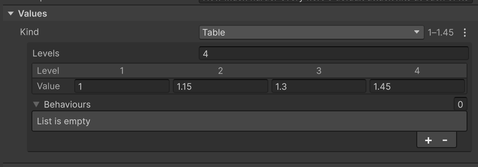

Values per level
A scaler's settings sit on a shaded block under its field, so they read as the scaler's among the fields around them.

A Scaler asset's Values section: a value for each level.
A kind shows only what it reads. A Fixed Value shows its value, and a Randomized scaler its variance, then the values its base value comes from.
A kind's field that applies only to some of its settings shows only for them, as an Asset Part's worker key for an effect's Worker Value.
| Property | Description |
|---|---|
| Values | Per Level or Spread Over Levels. A Table reads Per Level and By Level spreads, as their kinds say, so they have no choice here. A scaler of another kind with values for each level chooses. |
| Behaviours | Rules that adjust the value the scaler works out, in order. |
- A read-only curve beside the table shows the values, and spread, the curve they make. Its tooltip reads them, as "6 at level 1, rising to 8 at level 5".
- Quick Fill fills the levels the table shows.
- Nothing changes a scaler's values while it's drawn: its table keeps its length until you change it.
In this section
- Per Level: With Per Level, the scaler has one value per level, ten levels to a row.
- Spread Over Levels: With Spread Over Levels, the values are points on a curve over a level range, and a level between two points reads between them.